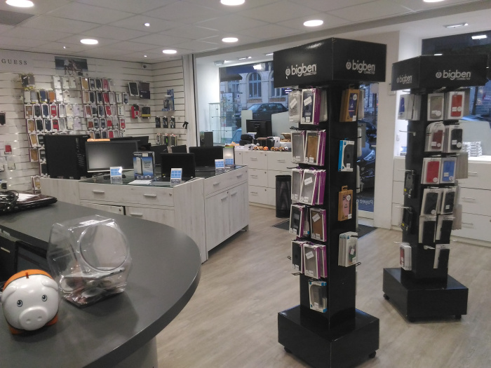

Le bilan PSM Numerik's
14 août 2017
A la fin de cette troisième semaine et donc à la moitié de mon stage, j’ai décidé de faire un petit bilan des trois premières
semaines et ainsi pouvoir constaté une évolution.
En effet au début, j’étais comme un petit chat qui venait d’arriver dans sa nouvelle maison, il fallait
que je prenne mes marques et que je découvre le magasin où j’allais passer la plus grande partie de mon temps
pendant 6 semaines. La première semaine a été de la découverte pour moi, je découvrais un milieu que je n’avais
jamais fréquenté, celui du commerce. Je devais rapidement apprendre le moindre recoins du magasin pour pouvoir
aider les autres employés comme je pouvais par la suite.
Chose que j’ai réussie à faire puisque lors de la deuxième semaine j’ai pu m’atteler à l’installation et
la préparation d’ordinateurs, ainsi que l’apprentissage de l’application JARVIS pour pouvoir prendre en charge
les clients. Au début les employés ne me donnaient que des taches sommaires à effectuer, et à la portée de
tous, au fur et à mesure, j’ai eu à effectuer des tâches qui demandaient plus de connaissances sur la réparation
et le magasin en général.
Lors de la troisième semaine, j’avais à peu près les mêmes tâches et missions à effectuer que lors de la
deuxième semaine, seulement elles étaient beaucoup plus nombreuses et étaient en corrélation avec le nombre
de clients qui augmentaient, il fallait donc augmenter également la cadence pour parvenir à traiter toutes
les demandes.

J’ai donc appris énormément de choses en 3 semaines, en effet même si je viens d’un milieu informatique et
tourné vers les nouvelles technologies, j’ai appris à apprécier ce milieu plus commercial. Ma formation
étant orientée vers le développement et le réseau, je ne peux pas trop m’exprimer dans ce magasin avec
les compétences que j’ai apprises en cours. Cependant mes bonnes connaissances générales sur l’informatique
me permettent de m’en sortir plutôt bien puisque je peux renseigner les clients sur des problèmes mineurs
et ainsi alléger mes collègues sur ces questions là, tandis que eux s’occupent des problèmes majeurs
et/ou nécessitant plus de connaissances.